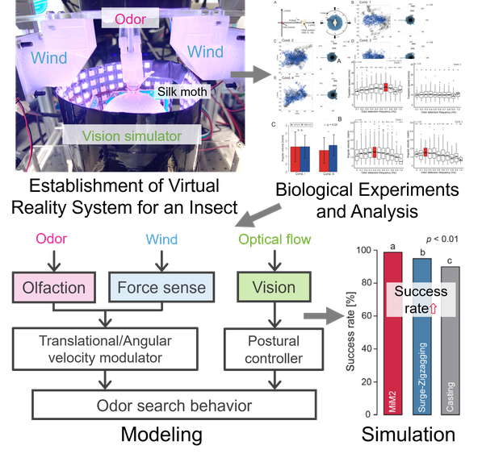
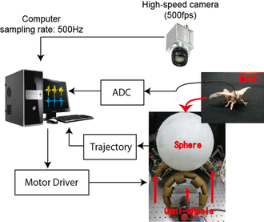
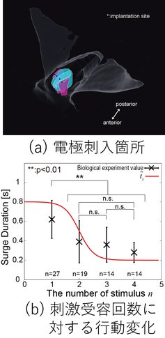
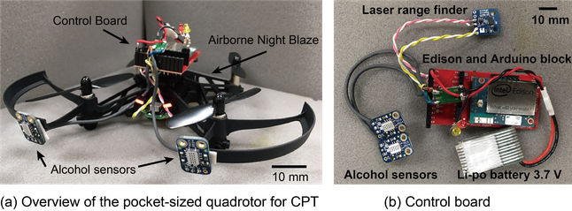
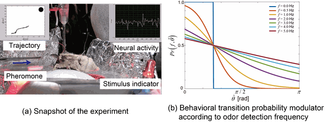

Palm-Sized Quadcopter for Three-Dimensional Chemical Plume Tracking
In this study, we designed and experimentally verified the placement of odor sensors and an algorithm using the aero-olfactory effect of a palm-sized quadcopter to solve the three-dimensional chemical plume tracking (3D-CPT) problem. Solving 3D-CPT is important in engineering as it helps perform rescue operations during disasters and identify sources of harmful substances. Moreover, the odor sensors must be properly located and a CPT algorithm be applied to improve the tracking performance of a chemical. However, studies regarding the use of quadcopters for solving the 3D-CPT problem are scarce, and the relationship between the odor sensor location and algorithm is debatable. Hence, we utilized particle image velocimetry, an airflow visualization technology, to evaluate the arrival direction of chemicals at different heights. The results showed that odor sensors must be placed on the upper and front surfaces of a quadcopter to monitor the chemicals three-dimensionally. Additionally, we designed a 3D surge-casting algorithm, which is an extension of the CPT strategy of a flying moth, that is, surge casting, to accommodate the proposed odor sensor placement. By conducting 3D-CPT experiments based on different heights of odor sources using the proposed system, we discovered that even in an environment with significant changes in the wind direction the CPT performance is better than that of the conventional 3D-CPT algorithm. Thus, 3D-CPT should be further improved to enable its application in unknown and cluttered environments. In this study, we improved the 3D-CPT performance of a palm-sized quadcopter by designing an appropriate sensor arrangement and algorithm balance.
This study was supported by Japan Keirin Autorace Foundation (JKA) through its promotion funds from AUTORACE.
Multisensory-motor integration in olfactory navigation of silkmoth, Bombyx mori, using virtual reality system

Most animals survive and thrive due to navigational behavior to reach their destinations. In order to navigate, it is important for animals to integrate information obtained from multisensory inputs and use that information to modulate their behavior. In this study, by using a virtual reality (VR) system for an insect, we investigated how the adult silkmoth integrates visual and wind direction information during female search behavior (olfactory behavior). According to the behavioral experiments using a VR system, the silkmoth had the highest navigational success rate when odor, vision, and wind information were correctly provided. However, the success rate of the search was reduced if the wind direction information provided was different from the direction actually detected. This indicates that it is important to acquire not only odor information but also wind direction information correctly. When the wind is received from the same direction as the odor, the silkmoth takes positive behavior; if the odor is detected but the wind direction is not in the same direction as the odor, the silkmoth behaves more carefully. This corresponds to a modulation of behavior according to the degree of complexity (turbulence) of the environment. We mathematically modeled the modulation of behavior using multisensory information and evaluated it using simulations. The mathematical model not only succeeded in reproducing the actual silkmoth search behavior but also improved the search success relative to the conventional odor-source search algorithm.
The behavioral data of silkworm moths measured by VR can be downloaded from the following button (published in eLife, 2021).
Wind source localization system based on palm-sized quadcopter
In this study, we implemented a compact wind direction sensor on a palm-sized quadcopter to achieve wind source localization (WSL). We designed an anemotaxis algorithm based on the sensor data and experimentally validated its efficacy. Anemotaxis refers to the strategy of moving upwind based on wind direction information, which is essential for tracing odors propagating through the air. Despite the limited research on quadcopter systems achieving WSL directly through environmental wind measurement sensors, debate remains regarding the relationship between sensor placement and the anemotaxis algorithm. Therefore, we experimentally investigated the placement of a wind direction sensor capable of estimating wind source direction even when propellers are rotating. Our findings demonstrated that placing the sensor 50 mm away from the enclosure of the quadcopter allowed accurate wind direction measurement without being affected by wake disturbances. Additionally, we constructed the anemotaxis algorithm based on wind direction and speed data, which we integrated into the quadcopter system. We confirmed the ability of the quadcopter to execute anemotaxis behavior and achieve WSL irrespective of environmental wind strength through wind source localization experiments.
A novel framework based on a data-driven approach for modeling the behavior of organisms in chemical plume tracing
We propose a data-driven approach for modelling an organism’s behaviour instead of conventional model-based strategies in chemical plume tracing (CPT). CPT models based on this approach show promise in faithfully reproducing organisms’ CPT behaviour. To construct the data-driven CPT model, a training dataset of the odour stimuli input toward the organism is needed, along with an output of the organism’s CPT behaviour. To this end, we constructed a measurement system comprising an array of alcohol sensors for the measurement of the input and a camera for tracking the output in a real scenario. Then, we determined a transfer function describing the input–output relationship as a stochastic process by applying Gaussian process regression, and established the data-driven CPT model based on measurements of the organism’s CPT behaviour. Through CPT experiments in simulations and a real environment, we evaluated the performance of the data-driven CPT model and compared its success rate with those obtained from conventional model-based strategies. As a result, the proposed data-driven CPT model demonstrated a better success rate than those obtained from conventional model-based strategies. Moreover, we considered that the data-driven CPT model could reflect the aspect of an organism’s adaptability that modulated its behaviour with respect to the surrounding environment. However, these useful results came from the CPT experiments conducted in simple settings of simulations and a real environment. If making the condition of the CPT experiments more complex, we confirmed that the data-driven CPT model would be less effective for locating an odour source. In this way, this paper not only poses major contributions toward the development of a novel framework based on a data-driven approach for modelling an organism’s CPT behaviour, but also displays a research limitation of a data-driven approach at this stage.
Wearable Vibration Sensor for Measuring Wing Flapping of Insect
In this study, we fabricated a novel wearable vibration sensor for insects and measured their wing flapping. An analysis of insect wing deformation in relation to changes in the environment plays an important role in understanding the underlying mechanism enabling insects to dynamically interact with their surrounding environment. It is common to use a high-speed camera to measure the wing flapping; however, it is difficult to analyze the feedback mechanism caused by the environmental changes caused by the flapping because this method applies an indirect measurement. Therefore, we propose the fabrication of a novel film sensor that is capable of measuring the changes in the wingbeat frequency of an insect. This novel sensor is composed of flat silver particles admixed with a silicone polymer, which changes the value of the resistor when a bending deformation occurs. As a result of attaching this sensor to the wings of a moth and a dragonfly and measuring the flapping of the wings, we were able to measure the frequency of the flapping with high accuracy. In addition, as a result of simultaneously measuring the relationship between the behavior of a moth during its search for an odor source and its wing flapping, it became clear that the frequency of the flapping changed depending on the frequency of the odor reception. From this result, a wearable film sensor for an insect that can measure the displacement of the body during a particular behavior was fabricated.
In this research, we aim to model an adaptive behavior of an animal and implement it to an autonomous robot. The conventional bio-inspired algorithm is difficult to demonstrate the ability as much as the animal because it models without considering dynamic characteristics of the robot. Therefore, in this study, we constructed an animal-in-the-loop system, which is a novel experimental system for identifying the adaptive behavior of the animal in a form that considers the dynamic characteristics of the robot to be implemented.
A novel method for full locomotion compensation of an untethered walking insect

図2: 3自由度サーボスフィア概要図
In this study, we developed a novel unfixed-type experimental system that we call a '3-DOF servosphere'. This system comprises one sphere and three omniwheels that support the sphere. The measurement method is very simple. An experimental animal is placed on top of the sphere. The position and heading angle of the animal are observed by using a high-speed camera installed above the sphere. Because the system can rotate the sphere with three degrees of freedom (DOFs) independently, the position and heading angle at the origin can be maintained without fixing the body. This system can be used to measure an animal's natural behavior while simultaneously providing it with precise stimuli. Moreover, electrodes can be inserted at specific sites to measure biosignals with locomotion. Therefore, this system can simultaneously measure the stimulus input-internal state-locomotion output of an animal. In this study, we focused on the chemical plume tracing (CPT) behavior of the Bombyx mori male silkworm moth in order to identify its CPT algorithm for mounting on a robot. In an experiment, we simultaneously measured the stimulus input, flight muscle electromyogram (EMG), and CPT behavior by using the 3-DOF servosphere to verify the system. We elucidated the relationship between the CPT behavior and flight muscle EMG.
Time-Varying Moth-Inspired Algorithm for Chemical Plume Tracing in Turbulent Environment

図3: 筋電位計測箇所と行動推定結果
In this study, we propose a robust chemical plume tracing (CPT) algorithm for various environments. We developed this algorithm based on the behavior of insects that have CPT abilities globally. However, it is difficult to accurately estimate the behavior pattern from trajectory data because the trajectory contains a high level of measurement noise. We employed flight muscle electromyograms, whose motor commands were assumed to be generated in the same ganglion as the behavior, to estimate the behavior pattern using a support vector machine. By using the estimated results, we modeled the time-varying behavioral change of insects and verified the effectiveness of the phenomenon for CPT using the constructive approach. We named this time-varying CPT algorithm as time-varying moth-inspired algorithm. From the CPT experiment results using the robot, we found that the localization success rate improved by changing the behavior in a time-variant manner.
Design and Experimental Evaluation of an Odor Sensing Method for a Pocket-Sized Quadcopter

Figure: Overview of an autonomous pocket-sized quadcopter system for CPT
In this study, we design and verify an intake system using the wake of a pocket-sized quadcopter for the chemical plume tracing (CPT) problem. Solving CPT represents an important technique in the field of engineering because it can be used to perform rescue operations at the time of a disaster and to identify sources of harmful substances. An appropriate intake of air when sensing odors plays an important role in performing CPT. Hence, we used the air flow generated by a quadcopter itself to intake chemical particles into two alcohol sensors. By experimental evaluation, we verified that the quadcopter wake intake method has good directivity and can be used to realize CPT. Concretely, even at various odor source heights, the quadcopter had a three-dimensional CPT success rate of at least 70%. These results imply that, although a further development of three-dimensional CPT is necessary in order to conduct it in unknown and cluttered environments, the intake method proposed in this paper enables a pocket-sized quadcopter to perform three-dimensional CPT.
Modeling of the Adaptive Chemical Plume Tracing Algorithm of an Insect Using Fuzzy Inference 現在進行中

Figure: (a) Snapshot of actual simultaneous brain (LAL)–behavior measurement experiment. (b) An odor detection frequency dependent behavioral modulator implemented in a robot.
In this paper, we focus on the chemical plume tracing (CPT) problem, which is a known engineering challenge. In nature, animals solve the CPT by adaptively modifying their behavior according to the environment. Therefore, we propose a CPT solution method with high engineering value by modeling the CPT algorithm of an animal. In this paper, we consider a male silkworm moth as a model. To perform CPT in a turbulent environment, the adaptive selection of the behavior plays an important role. Therefore, we performed simultaneous measurement experiments involving CPT behavior of the brain and analyzed the links between the brain's neural activity and behavioral patterns. We measured the brain's neural response in the lateral accessory lobe (LAL), which generates motion commands. We employed fuzzy inference to analyze the relationship between CPT behavior and LAL neural activity. As a result of analyzing the relationship between CPT behavior and LAL, we found that the moth modulates the behavior of the state transition probability depending on the odor frequency. We modeled the obtained phenomenon and verified its effectiveness through a constructive method. As a result, the search performance was improved compared to the conventional moth algorithm.
Dynamic Model Identification for Insect Electroantennogram with Printed Electrode